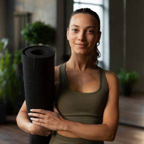

Meet Our Instructors

ADA LOVELACE, Lead Instructor
Ada has taught for more than twelve years and specializes in welcoming first-time students. Her classes are known for clear guidance, gentle humour, and no pressure.
GRACE HOPPER, Restorative and Gentle Yoga
Grace works with older adults and busy professionals, using props and slow breathing to help students release tension safely.
Accessibility Accommodations
We want every student to feel comfortable and supported.
- Step-free entrance and an accessible washroom
- Chairs, bolsters, blocks, and straps for supported practice
- Quiet, low-light restorative classes
- Instructors who offer pose modifications throughout every class
If you need something that is not listed, please tell us through the request form and we will do our best to help.
Studio Policies
- Please arrive 10 minutes early for your first class.
- Cancel at least 12 hours ahead to keep your class credit.
- Phones are silenced and stored away during class.
- Let your instructor know about injuries or health concerns before class begins.
- Be kind to yourself and others; every body is welcome here.